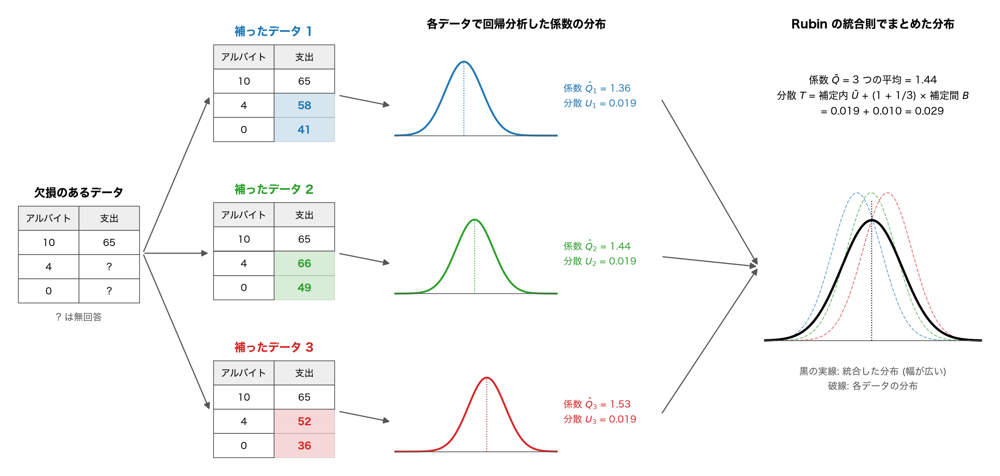

多重代入法と補定方法の評価
複数回補って結果を統合する方法 (多重代入法)
補った値の不確かさを推定に反映する
単一代入法で補った値は, 本当の値の推測にすぎません. それを観測した値と同じに扱って回帰分析をすると, 標準誤差が実際より小さく出て, 検定で差があると判定しやすくなります.
多重代入法 (multiple imputation) は, 確率的回帰補完のように乱数を含む補定を m 回行い, 補った値の違う m 個のデータセットを作ります. 各データセットで同じ分析を行い, m 個の結果のばらつきを, 補った値の不確かさとして標準誤差に加えます. 手順は次の 3 段です.
- 欠けた値を補ったデータセットを m 個作る.
- m 個のデータセットそれぞれで, 同じ分析 (回帰分析など) を行う.
- m 個の結果を, Rubin の統合則で 1 つにまとめる.
次の図は, m = 3 のときの 3 段の流れです. 無回答の支出に補う値はデータセットごとに違うので, 各データセットで推定したアルバイト時間の係数も少しずつずれます. 手順 3の Rubin の統合則は, 3 つの係数の平均を推定値とし, 各データセットでの分散 (補定内の分散) に係数のずれ (補定間の分散) を足して全体の分散とします. そのため, 統合した分布は各データセットの分布より幅が広くなります. 図の数値は説明のために作った例です.

手順 1 の補定には, 連鎖方程式による多重代入法 (MICE, Multivariate Imputation by Chained Equations) をよく使います. 欠けた変数が複数あるとき, 次の操作を繰り返します.
- 欠けた値をいったん平均などで埋める.
- 欠損のある変数を 1 つ選び, 他の変数から確率的回帰補完で補い直す.
- 次の変数を選び, 補い直した値も使って同じように補い直す. すべての変数を補い直したら 1 周.
- 補った値が安定するまで, 周を繰り返す.
支出を補うにはアルバイト時間が要り, アルバイト時間を補うには支出が要るという, 互いに欠けている変数を交互に補えます.
この節では, 支出をアルバイト時間と通学時間で説明する重回帰分析を, 多重代入法で行います. 例題では支出, アルバイト時間, 居住形態の 3 つが欠けています. 以下で使う scikit-learn の IterativeImputer は数値の変数しか補えないので, カテゴリー変数の居住形態は使いません. カテゴリー変数も含めて補いたいときは, R の mice パッケージなどを使います.
手順 1: 補ったデータセットを m 個作る
scikit-learn の IterativeImputer は, 連鎖方程式の考え方で欠けた値を補います. sample_posterior=True を指定すると, 予測値そのものではなく, 予測の不確かさに応じた乱数を含む値で補います. random_state を変えて m 回実行すると, m 個の違うデータセットができます. IterativeImputer は scikit-learn で試験的な機能の扱いなので, 1 行目の enable_iterative_imputer を先に読み込む必要があります.
from sklearn.experimental import enable_iterative_imputer # noqa: F401
from sklearn.impute import IterativeImputer
num_cols = ['grade', 'commute_min', 'work_hours', 'spending', 'sleep_hours']
m = 20 # 作るデータセットの数
imputed = []
for i in range(m):
imputer = IterativeImputer(sample_posterior=True, max_iter=20, random_state=i)
values = imputer.fit_transform(df[num_cols])
imputed.append(pd.DataFrame(values, columns=num_cols))
# 1 人目の無回答の学生について, データセットごとに補った支出を見る
first = df.index[df['spending'].isna()][0]
print([round(float(d.loc[first, 'spending']), 1) for d in imputed[:5]])
"""
[73.5, 89.9, 100.3, 41.6, 69.3]
"""同じ学生の支出が, データセットによって 41.6 千円から 100.3 千円まで違う値で補われています. この違いが, その学生の支出についての不確かさを表します. 回答のある値は, どのデータセットでも同じです. 多重代入法では, この 20 個の値を平均して 1 つのデータにまとめることはしません. 20 個のデータセットのまま分析し, 分析の結果をまとめます.
手順 2: 各データセットで分析する
20 個のデータセットそれぞれで, 回帰分析と同じ statsmodels の重回帰分析を行い, 係数と標準誤差を集めます. 標準誤差は 2 乗して分散にしておきます (統合則が分散で計算するためです).
import statsmodels.formula.api as smf
formula = 'spending ~ work_hours + commute_min'
estimates, variances = [], []
for data in imputed:
result = smf.ols(formula, data=data).fit()
estimates.append(result.params)
variances.append(result.bse**2)
estimates = pd.DataFrame(estimates)
variances = pd.DataFrame(variances)
print(estimates.head().round(3))
"""
Intercept work_hours commute_min
0 74.082 1.410 -0.475
1 75.832 1.297 -0.488
2 76.095 1.401 -0.504
3 74.467 1.366 -0.485
4 74.008 1.525 -0.479
"""アルバイト時間の係数は, 最初の 5 個のデータセットだけでも 1.297 から 1.525 まで違います.
手順 3: Rubin の統合則で結果をまとめる
m 個の推定値 \hat{Q}_1, \dots, \hat{Q}_m と, その分散 (標準誤差の 2 乗) U_1, \dots, U_m を, 次の式で 1 つにまとめます. これを Rubin の統合則 (Rubin’s rules) といいます.
- Rubin の統合則
\bar{Q} = \frac{1}{m} \sum_{i=1}^{m} \hat{Q}_i \qquad \bar{U} = \frac{1}{m} \sum_{i=1}^{m} U_i \qquad B = \frac{1}{m-1} \sum_{i=1}^{m} \left( \hat{Q}_i - \bar{Q} \right)^2
T = \bar{U} + \left( 1 + \frac{1}{m} \right) B
\bar{Q}: 統合した推定値, \bar{U}: 補定内の分散, B: 補定間の分散, T: 全体の分散 (統合した標準誤差は \sqrt{T}).
点推定 \bar{Q} は m 個の推定値の平均です. 分散 T は 2 つの部分からなります.
- 補定内の分散 \bar{U}: 各データセットでの推定の分散の平均. 欠損が無かったとしても残る, 標本から推定することによる不確かさです.
- 補定間の分散 B: m 個の推定値のばらつき. 補った値が分からないことによる不確かさです. 補った値の違いで推定値が大きく変わるほど大きくなります.
B に掛かる (1 + 1/m) は, m が有限であることによる補正です. 単一代入法は B に当たる不確かさを入れないので, 標準誤差が小さく出ます.
式をそのまま関数にします. 最後の列は, 全体の分散 T のうち補定間の分散による部分の割合です.
def pool(estimates, variances):
"""Rubin の統合則で, m 個の推定値と分散を 1 つにまとめる."""
m = len(estimates)
q_bar = estimates.mean() # 点推定: 推定値の平均
w = variances.mean() # 補定内の分散
b = estimates.var(ddof=1) # 補定間の分散
t = w + (1 + 1 / m) * b # 全体の分散
return pd.DataFrame({
'推定値': q_bar,
'標準誤差': np.sqrt(t),
'補定内': w,
'補定間': b,
'補定間の割合': (1 + 1 / m) * b / t,
})
print(pool(estimates, variances).round(3))
"""
推定値 標準誤差 補定内 補定間 補定間の割合
Intercept 74.545 2.404 4.835 0.900 0.164
work_hours 1.442 0.162 0.019 0.007 0.277
commute_min -0.488 0.034 0.001 0.000 0.205
"""アルバイト時間の係数は 1.442, 標準誤差は 0.162 です. 全体の分散のうち 27.7% が補定間の分散で, その分は補った値が分からないことによる不確かさです.
statsmodels にも, 連鎖方程式による多重代入法と統合までを行う statsmodels.imputation.mice があります. この例では, 統合則の式と計算の対応が見えるように, 統合を自分で書きました.
m をいくつにするかの目安として, 欠損のある行の割合 (%) と同じくらいの数がよく挙げられます. 例題で使った 5 つの変数では, 支出かアルバイト時間が欠けている行が 31% なので, 30 程度です. m が小さいと, 乱数の種を変えただけで統合した結果が変わります.
この節に対応する演習は, Exercise DSP15-4です.